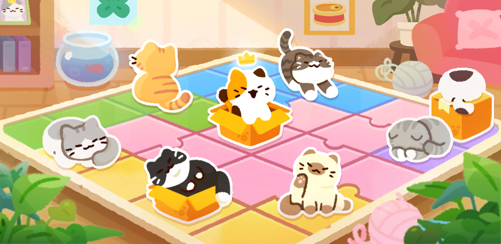
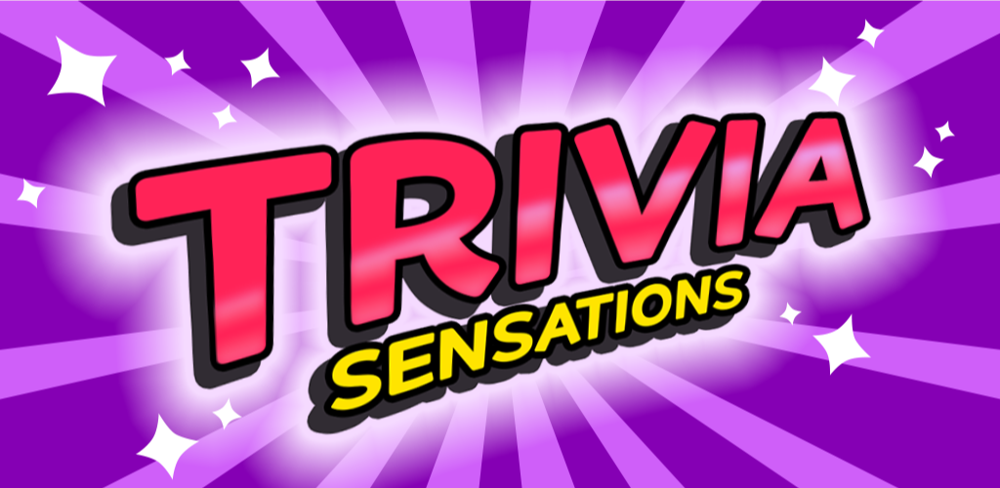
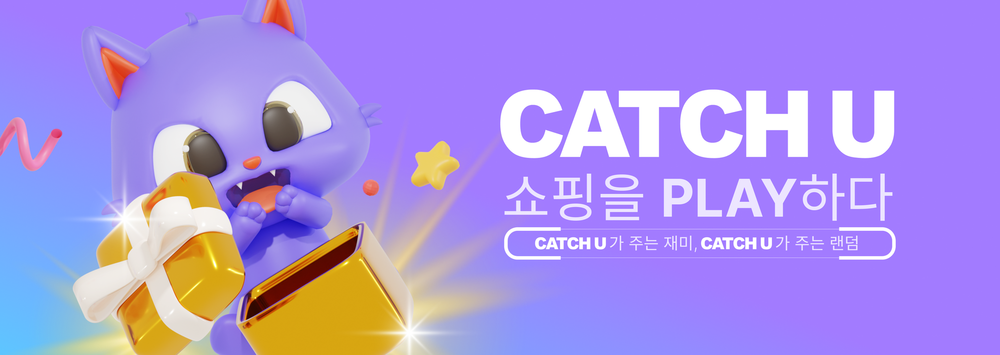
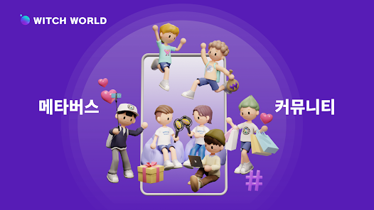
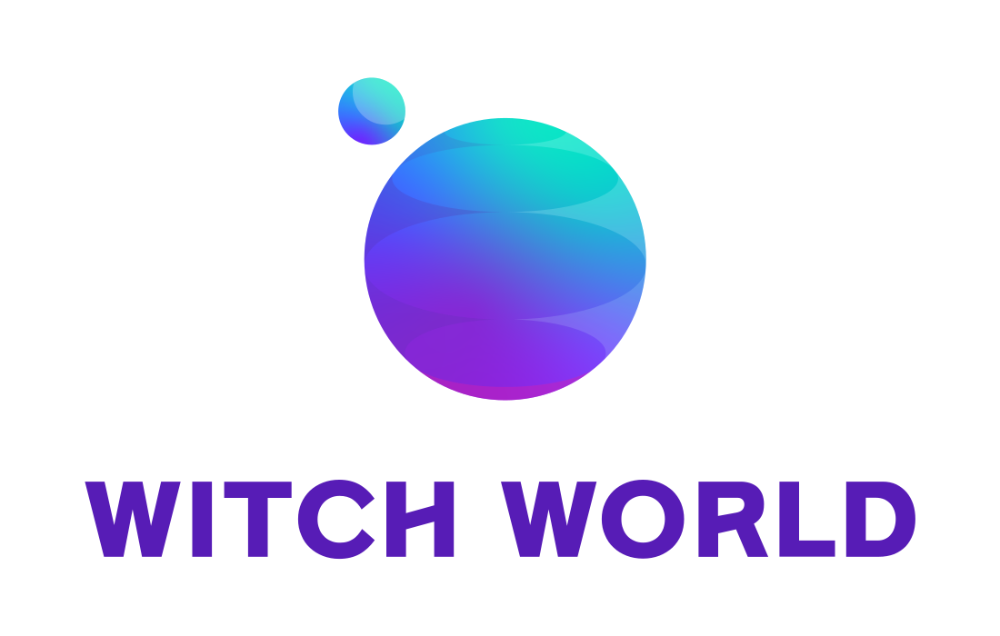
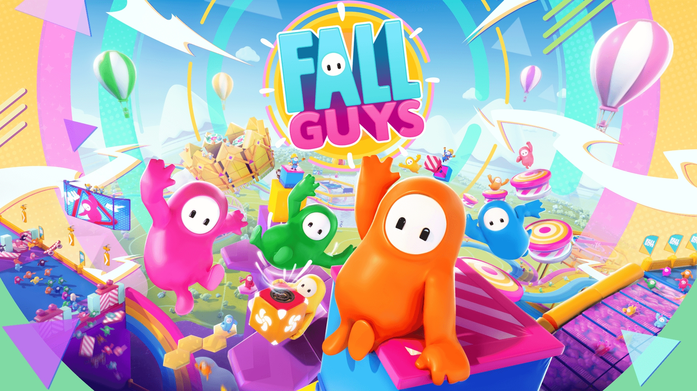
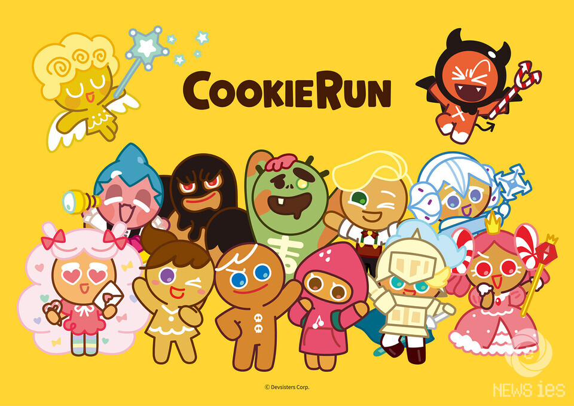

2026.05 — 현재
사이드캣
Unity Client Programmer
모바일 논리 퍼즐 게임 한줄에한냥 개발
DEVELOPER — UNITY CLIENT PROGRAMMER · 3 YEARS
CHOI HUI JI
100 + 1을 지향하는 개발자
최희지입니다.
2026.05 — 현재
Unity Client Programmer
모바일 논리 퍼즐 게임 한줄에한냥 개발
2025.02 — 2026.04
Unity Team · Unity Client Programmer
No WiFi Mini Games — Chillax 콘텐츠 개발 및 유지보수
모바일 퀴즈 게임 Trivia의 클라이언트 개발
2024.09 — 2025.01
Unity Team · Unity Client Programmer
쇼핑 앱 캐치유 개발 및 유지보수
2023.09 — 2024.06
Unity Team · Unity Client Programmer
위치월드와 콘텐츠 제작 SDK 유지보수
2026. 09 — 현재
3학년 재학 중
2022. 12 — 2023. 06
수료
2015. 03 — 2018. 02
졸업 | 3.35 / 4.5

사이드캣
고양이를 행·열·영역별 제약에 맞춰 배치하는 모바일 논리 퍼즐 게임. 게임 로직, 힌트 추론 시스템, 반응형 UI, 다국어 지원, AI 경쟁 시스템을 구현했습니다.

(주)스프레드잇
다양한 테마의 퀴즈를 즐기는 모바일 게임. 클라이언트 전체 개발을 담당했으며, 공통 게임 흐름과 테마별 규칙을 분리해 확장 가능한 구조로 설계했습니다.

(주)케이엘피
랜덤 뽑기의 재미를 쇼핑에 접목한 모바일 앱. 키워드 구독·검색 화면을 구현하고, 랭킹·마켓·상품 후기 화면의 UI 개편과 데이터 연동을 담당했습니다.

(주)위치컴퍼니
아바타로 가상 공간을 탐험하고 꾸미며 다른 사용자와 소통하는 메타버스 플랫폼. 아티스트의 가상 팬미팅 등 실시간 소셜 콘텐츠를 제공하며, 서버 연동과 콘텐츠 개발 및 유지보수를 담당했습니다.

(주)위치컴퍼니
메타버스 콘텐츠 제작용 Unity SDK. 사내 개발 편의용 EditorWindow를 유지보수하고, 유저 아이템 전시를 위한 신규 컴포넌트를 개발했습니다.

팀 프로젝트 · 3인
세 번의 캐주얼 게임에서 얻은 점수로 최종 순위를 가리는 폴가이즈 모작. 플레이어의 이동과 애니메이션, 카메라 및 UI 시스템을 구현했습니다.

개인 프로젝트 · 1인
장애물을 피하며 달리는 쿠키런 모작. 플레이어의 상태별 동작과 UI, 아이템·장애물을 구현하고, 반복되는 맵 구간을 재사용하도록 구성했습니다.
개인 학습
C++로 자료구조와 알고리즘을 학습하며 구현한 코드입니다. 인터넷 검색과 AI를 사용하지 않고, 코드를 직접 설계하고 작성했습니다.